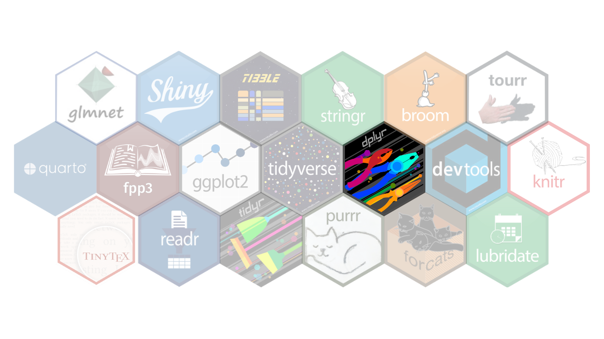

world = FileAttachment("countries-110m.json").json()
countries = topojson.feature(world, world.objects.countries)
score = new Map((await FileAttachment("rusers_rank2015.csv").csv()).map(d => [d.id, +d.score]))
rank = new Map((await FileAttachment("rusers_rank2015.csv").csv()).map(d => [d.id, +d.rank]))
city = [{ name: "Auckland", lat: -36.848461, lon: 174.763336 }]R You Curious About R? Here’s Everything You Need to Know!
 You Curious About ? Here’s Everything You
You Curious About ? Here’s Everything You
Need To Know!
If you are seeking a programming language that combines powerful statistical analysis, elegant data visualization, and flexibility, R is a good choice for you.
But have you ever wondered how R becomes the go-to tool for data scientists and statisticians worldwide?
Hence, let’s explore the journey of R from a niche tool to a global phenomenon. Whether you’re a beginner or just curious about its story, this has everything you need to know to get started with R.
R has become one of the most widely used programming languages across the globe, thanks to its power in data analysis, visualization, and statistical computing. The number of R users has grown exponentially, solidifying its position in academia, research, and industry.
This map shows the R popularity score of worldwide, which is the scale average of the number of R conference attendees, R Foundation and RUG members, R-bloggers.com visits and CRAN downloads per 1,000 people using data up to 2015. R users are primarily located in countries across Europe, Oceania, and North America.
What many may not know is that R originates from
New Zealand.
R was created by two professors, Ross Ihaka and Robert Gentleman, from the University of Auckland in the early 1990s.
Inspired by S programming language, this pioneering duo developed a language to teach introductory statistics at the University of Auckland and named it after the initial of their first names.
Their vision of a free and open-source platform for statistical computing has since empowered countless data enthusiasts and professionals worldwide, creating a vibrant community that continues to innovate and expand the boundaries of R.
One of the key drivers behind this innovation is R’s package ecosystem. But what exactly is an R package? Think of it as an extension or add-on for R, created by the community to solve specific problems or enhance functionality. Each package bundles together reusable functions, data, and documentation, making it easier for users to tackle tasks without reinventing the wheel.
With over 18,000 packages available on CRAN (the Comprehensive R Archive Network), R’s functionality is virtually limitless. Let’s explore a few game-changing packages.
tidyverse is one of the most popular R packages, which is a collection of R packages designed for data science, including: ggplot2, readr, tidyr, purrr, dplyr, stringr, tibble. All packages follow a consistent design philosophy, grammar, and data structures.
tibble is a modern take on R’s classic data frame. Tibbles keep what works and fix what doesn’t. For example, tibbles don’t automatically change variable names or data types, and they flag potential issues early. This helps you write cleaner, more reliable code. Additionally, tibbles come with an improved print function, making it easier to work with large datasets or complex objects.
ggplot2 is a system for declaratively creating graphics, based on The Grammar of Graphics. You provide the data, tell ggplot2 how to map variables to aesthetics, what graphical primitives to use, and it takes care of the details.
readr is designed to make importing data into R fast and hassle-free. It works great with delimited files such as comma-separated values (CSV) and tab-separated values (TSV) and provides helpful feedback if something goes wrong. Whether you’re working with messy data or clean tables, readr simplifies the process.
tidyr package helps organize data into a “tidy” format, where:
- Each variable is a column; each column is a variable.
- Each observation is a row; each row is an observation.
- Each value is a cell; each cell is a single value.
Tidy data makes the analysis easier, more intuitive, and compatible with the rest of the tidyverse tools.
purrr expands R’s functional programming (FP) toolkit by offering a complete and consistent set of tools for working with functions and vectors. It’s great for working with functions and vectors. One of its standout features is the map() family of functions, which can replace repetitive for-loops with simpler, more readable code.
forcats is a powerful tool for managing and manipulating factors, R’s way of handling categorical data. It simplifies tasks like reordering, renaming, and reorganizing factor levels, making it easier to analyze or present categorical variables effectively. Whether it’s cleaning messy data or fine-tuning visualizations, forcats simplifies the process of handling categories with ease and precision.
dplyr is a toolkit for data manipulation, providing a consistent set of functions that help handle common data wrangling tasks. Its clean syntax ensures the readability and efficiency of the codes.
stringr streamlines working with text data in R, providing a consistent set of functions for tasks such as searching, replacing, and splitting strings. When dealing with messy text data, stringr efficiently reduces effort and saves time.
As an interpreted language, R operates through a native command-line interface (CLI), offering users direct access to its powerful capabilities for data analysis and statistical computing. While the CLI is effective for experienced users, it can be challenging for beginners or those working on more complex projects. This is where RStudio, an integrated development environment (IDE) for R, comes in. RStudio enhances the R experience by providing a user-friendly interface with a suite of tools that streamline the workflow for data analysis.
One of its standout features is its robust support for R Markdown, which allows users to create dynamic, reproducible analyses and share results in a variety of formats, such as HTML, PDF, and Word. RStudio’s integration of these tools enhance the ability to organize, visualize, and analyse data, which promotes reproducibility and transparency in research and professional data work.
But R is more than just a language or a tool, it’s a community. R enthusiasts connect through global groups, conferences, and meetups such as R-Ladies, posit::conf, and useR!.
This collaborative spirit has fostered a culture of knowledge sharing and mutual support, driving R’s continuous evolution.
Are you ready to explore the power and versatility of R? Dive in today and join a community that’s shaping the future of data analysis and visualization.

Ross Ihaka
Robert Gentleman
